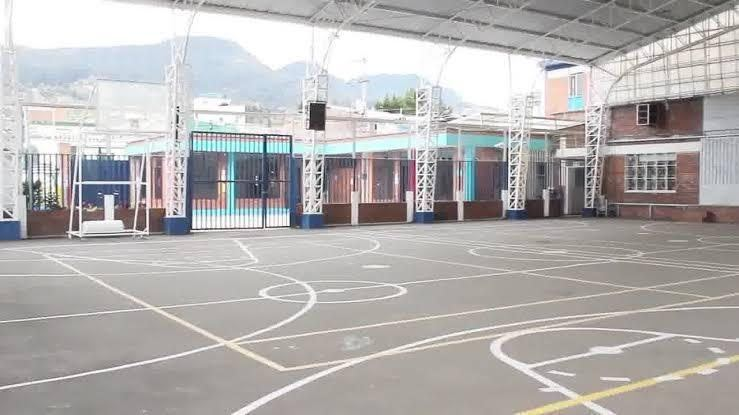
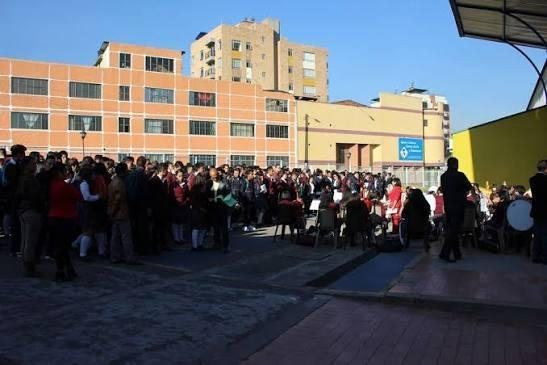
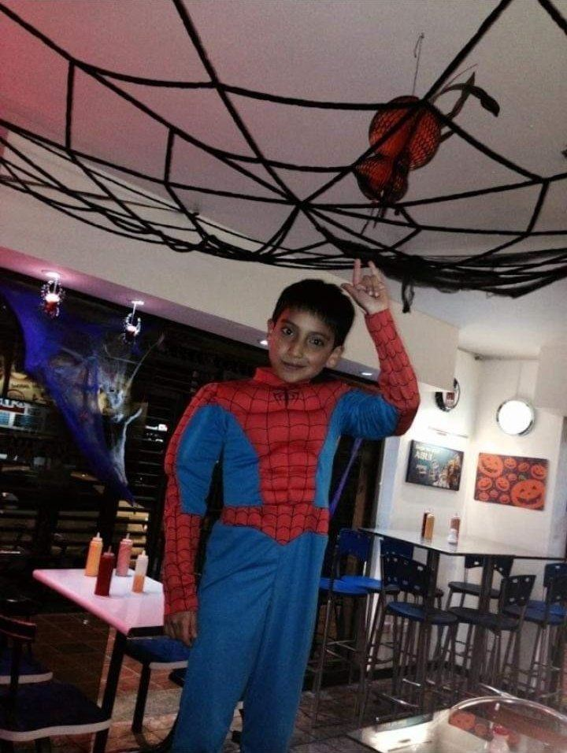
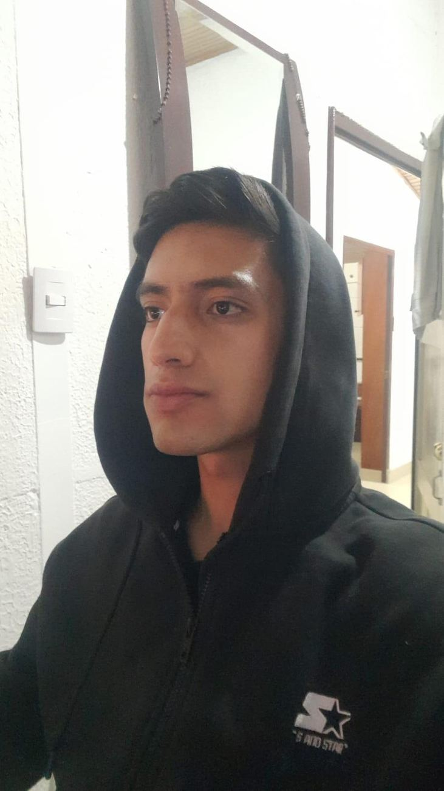
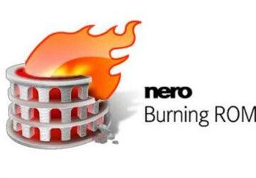
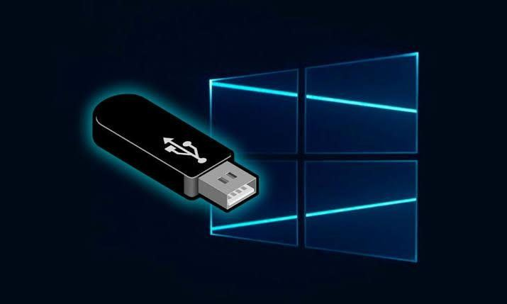
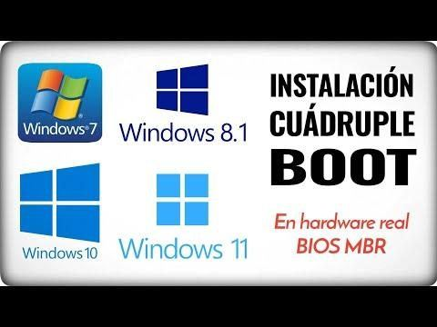

YO
Juan Sebastián Lozano Calderón. Estudiante de Ingeniería de Sistemas y Computación en la Universidad Católica de Colombia. Toca cualquier foto para verla en grande.
La Familia es un pilar fundamental a lo largo de la vida, a pesar de las circunstancias siempre su apoyo incondicional y los consejos que nos brindan para mejorar y ser mejor persona en todos los ámbitos de la vida, vale más que cualquier diamante, oro, plata, etc. No tiene precio, es imposible de calcular (incalculable)
Mi recorrido académico
Cada etapa es un nivel. Algunos tuvieron pausas (checkpoints), pero ninguno quedó sin terminar.
Instituto San Juan de Dios
Actualmente Colegio Bilingüe.

Colegio Técnico Aldemar Rojas Plazas
Me gradué de Técnico en Diseño y Desarrollo de Software.

Ingeniería de Sistemas y Computación
Comencé en la generación 2022-1 en la Universidad Católica de Colombia.
Estructuras de Datos
Listas, pilas, colas y punteros en C++. En abril de 2025 lo repasé por mi cuenta. Ver mi código de listas enlazadas Hector Jaimes 2024-1 ↓
Pausas en el camino
No fueron impedimento. Dios mediante, con mucha disciplina, resiliencia y esfuerzo, que con el tiempo han construido talento.
Desarrollo de software
Git, GitHub, ramas y endpoints con FastAPI junto al Ing. Sergio Galvis Motoa. Ver mi arsenal ↓
Redes Computacionales
Con el Ing. Andrés Torres, la puerta a Administración de Redes.
Cursando el periodo 2026-3
Desplegando esta página en un servidor Apache sobre AWS EC2.
Ingeniero de Sistemas y Computación
Y después: especialización en Ciberseguridad.
mi especialización a futuro
Ciberseguridad engloba entender todas las fases: el ciclo de desarrollo de software, IA/Machine Learning, la nube y las redes e infraestructura de TI.
¿Cómo empezó todo?
La inspiración de la ingeniería llegó por las series y los juegos: Ben 10, Max Steel, Generator Rex, Spider-Man, Mr. Robot, Geometry Dash… Pasa el mouse por un video para ver un adelanto y haz clic para verlo completo.
Inspiración de la ingeniería


Series favoritas de la infancia
Familiares que me inspiraron curiosidad por las computadoras
Lo que aprendí por curiosidad
Temas que al principio me agotaban mucho, pero la curiosidad y la disciplina/resiliencia durante este largo juego/trayecto llamado vida son las que me han llevado hasta donde me encuentro hoy.



Universidad Católica de Colombia
2022 – 2027 · Ingeniería de Sistemas y Computación. Gracias a los docentes, secretario y decano con quienes he compartido clases y que me han apoyado en el camino.
Estructuras de Datos · Listas enlazadas en C++
Vi Estructuras de Datos en el periodo 2024-1. En abril de 2025 volví por mi cuenta a repasar listas enlazadas simples y escribí este programa: crea la lista, inserta al final, busca un valor y elimina nodos (al inicio o en medio). A la derecha puedes jugar con la misma lógica: cada botón ejecuta la función equivalente y la resalta en el código.
#include<iostream> using namespace std; struct Nodo{ int dato; Nodo* sig; }; void crearLista(Nodo*& cab, int d){ Nodo* nuevo = new Nodo; nuevo->dato = d; nuevo->sig = NULL; cab = nuevo; } void insertarFinal(Nodo* cab, int d){ Nodo* aux = cab; Nodo* nuevo = new Nodo; nuevo->dato = d; while(aux->sig != NULL){ aux = aux->sig; } aux->sig = nuevo; nuevo->sig = NULL; } void mostrarLista(Nodo* cab){ Nodo* aux = cab; while(aux != NULL){ cout<<aux->dato<<" -> "; aux = aux->sig; } } Nodo* buscarNodo(Nodo*cab, int d){ Nodo* aux = cab; while(aux != NULL){ if(aux->dato == d){ return aux; } aux = aux->sig; } return NULL; } void eliminarInicio(Nodo*& cab){ Nodo* aux = cab; cab = cab->sig; delete aux; } void eliminarMedio(Nodo* cab, Nodo* elim){ Nodo* aux = cab; while(aux->sig != elim){ aux = aux->sig; } aux->sig = elim->sig; delete elim; } int main(){ Nodo* cab = NULL; Nodo* buscar = NULL; int dato, N; cout<<"Digite la cantidad de datos que desea: "; cin >> N; for(int i = 1; i <= N; i++){ cout<<"Digite el dato "<<i<<" : "; cin >> dato; if(cab == NULL){ crearLista(cab,dato); }else{ insertarFinal(cab,dato); } } mostrarLista(cab); int opc = 1; while(opc == 1){ cout<<endl<<"Digite un valor para verificar si existe: "; cin >> dato; buscar = buscarNodo(cab,dato); if(buscar != NULL){ cout<<"El dato existe"; }else{ cout<<"El dato no existe"; } cout<<"\nDesea continuar? 1. Si 2. No "; cin >> opc; } opc = 1; while(opc == 1){ do{ cout<<endl<<"Digite un valor para eliminar: "; cin >> dato; buscar = buscarNodo(cab,dato); if(buscar != NULL){ cout<<"El dato existe en la lista"; }else{ cout<<"El dato no existe"; } }while(buscar == NULL); if(buscar == cab){ eliminarInicio(cab); }else{ eliminarMedio(cab,buscar); } cout<<endl<<"Lista modificada..."<<endl; mostrarLista(cab); cout<<"\nDesea continuar? 1. Si 2. No "; cin >> opc; } cout<<"Mision cumplida :D"<<endl; }
Simulador de la lista
Escribe un número y elige una operación. El nodo rosado es la cabeza (cab); el amarillo es aux recorriendo la lista.
Nodo*& cab permite que la función cambie la cabeza real, no una copia.aux = aux->sig hasta llegar a NULL.new reserva un nodo y cada delete lo libera al eliminarlo.Docentes que han hecho parte de mi camino
Mi arsenal de ingeniero
Las herramientas que fui desbloqueando con mis docentes. Elige una pestaña: cada una es un mini-laboratorio que puedes tocar.
Desarrollo de software · Ing. Sergio Galvis Motoa · 2025-3. Aquí vi control de versiones con Git, ramas (branches) y cómo subir proyectos a GitHub. Es la parte que más quiero reforzar, así que construí este simulador para practicar: toca los comandos en orden. El que brilla es el siguiente sugerido. + Santos Triana Sistemas Operarivos 2026-1
git init: convierte tu carpeta en un repositorio que recuerda cada cambio.Endpoints con FastAPI. FastAPI es un framework de Python creado por el colombiano Sebastián Ramírez, conocido en línea como tiangolo. Con él creé endpoints que devuelven datos (JSON) y páginas completas con HTMLResponse, usando HTML y CSS para que el sitio sea más estiloso, animado y dinámico. Prueba las peticiones:
from fastapi import FastAPI from fastapi.responses import HTMLResponse app = FastAPI() @app.get("/api/saludo") def saludo(): return {"mensaje": "Hola, soy Juan"} @app.get("/", response_class=HTMLResponse) def inicio(): return "<h1>Hola, soy Juan</h1>" # /docs lo genera FastAPI solo (Swagger UI)
Elige una petición para ver la respuesta del servidor.
La usabilidad: un atributo de calidad que esta página intenta cumplir
La usabilidad mide qué tan fácil, eficiente y agradable es usar un sistema (es uno de los atributos de calidad de la norma ISO/IEC 25010). Toca cada tarjeta para ver cómo se aplica aquí mismo:
Arquitectura de Software · Ing. Sergio Arturo Piñeros · 2026-3 (cursándola). Aprendí qué hace un arquitecto de software, sus power skills y los atributos de calidad. Todo empieza levantando la información correcta. Toca cada etapa:
Atributos de calidad
Power skills del arquitecto
Cómo pensar un excelente portafolio. Lo aprendí con el Ing. Sergio Galvis Motoa y lo reforzaron en CONIITI Julián González (Blen360, parte de Women In Tech Colombia) y la Ing. Solangie Garavito, docente de la Universidad Católica de Colombia. Desliza las reglas y marca las que ya cumples:
Todo se conecta
Desde las bases (Fundamentación Matemática, Algoritmia y Programación, Pensamiento Sistémico) todas las materias hacen sinergia: se cruzan como en un diagrama de Venn y juntas nos forman como mejores ingenieros. Toca cada zona del diagrama.
Diagrama de Venn (John Venn, 1880). El centro es donde quiero llegar.
De un problema real a un modelo de IA
La intersección entre Formulación y Evaluación de Proyectos (Ing. Hellen Parra) y Problem Discovery and Solution Design with AI (Ing. Juan Carlos Navarro, 2026-3). Dale play al recorrido:
Problem statement
Identificar la necesidad real antes de pensar en tecnología.
Datos que lo prueban
¿Tenemos suficientes datos para demostrar que el problema existe?
Datos para entrenar
¿Y suficientes para alimentar el modelo? Big data: millones de ejemplos.
Tipo de modelo
De lenguaje (ChatGPT, Gemini, Claude), generativo o de visión por computador.
Redes neuronales
El modelo aprende y reconoce patrones. Los transformers son la base de los modelos de lenguaje actuales.
Ciberseguridad explicada fácil
Con el experto Luis Salazar vi de forma gráfica cómo funciona un exploit, qué es un PLC, un hipervisor y cómo todo eso se simula en un sandbox. Diego Osorio complementó con cifras: los ataques y el phishing ocurren cada pocos minutos.
La Facultad de Ingeniería: programas hermanos
Ninguna ingeniería trabaja sola. Desliza para conocer cómo cada programa se cruza con Sistemas:
Jaime Díaz Ortiz
José Joaquín Prieto Tunjano
Claudia Constanza Jiménez Carranza
Centro de Investigaciones de la Facultad de Ingeniería.
Mi sugerencia (PQRS): ¿cómo viaja una idea?
El futuro es el IoT (internet de las cosas) y los sistemas embebidos, y para eso necesitamos ingenieros electrónicos. Mi sugerencia: hacer una encuesta para saber cuántas personas estarían interesadas en continuar el programa de Ingeniería Electrónica y Telecomunicaciones. Sé que depende de los cupos, de quienes se inscriban y de las decisiones de las directivas, pero todo empieza por una sugerencia.
- Estudiantes (sugerencias)
- Cuerpo docente
- Directores de programa
- Secretaría de Facultad
- Decanatura
- Vicerrectoría
- Rectoría
Cómo aprendo (y no olvido)
Poco a poco voy recordando y refrescando lo que vi con tres metodologías de estudio. Pruébalas aquí mismo.
1 · La técnica Feynman
Richard Feynman fue un físico teórico estadounidense, conocido por la formulación de integrales de camino en la mecánica cuántica, la electrodinámica cuántica y la física de la superfluidez del helio líquido. Su lema práctico: si no puedes explicarlo de forma simple, aún no lo entiendes.
- Elige un concepto.
- Explícalo como si fuera para un niño.
- Detecta dónde te trabas y vuelve a la fuente.
- Simplifica con analogías.
2 · Repetición espaciada: vencer la curva del olvido
Modelo ilustrativo. Los puntos son repasos en los días 1, 3, 7, 14 y 28: después de cada uno, el olvido es más lento.
Ni la repetición espaciada ni el active recall los inventó una sola persona: evolucionaron durante décadas de investigación en psicología cognitiva. Desliza la línea del tiempo:
3 · Active recall: juega con las cajas de Leitner
Intenta responder antes de voltear la tarjeta. Si la sabías, sube de caja (se repasa menos); si no, vuelve a la caja 1. Las preguntas son de esta misma página.
Referencias y derechos de autor
Página con fines académicos y sin ánimo de lucro. Las fotos familiares son propias. Los fragmentos de series, juegos, música, logos y fotos institucionales pertenecen a sus respectivos titulares y se citan aquí como referencia.